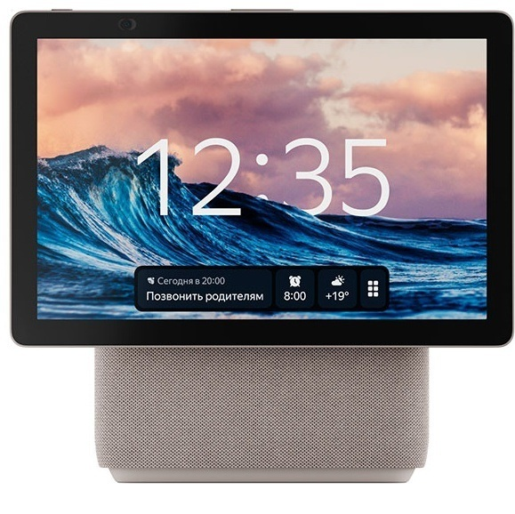
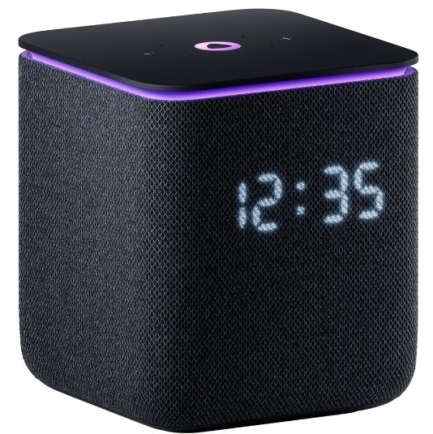
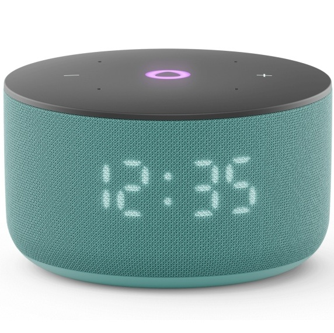
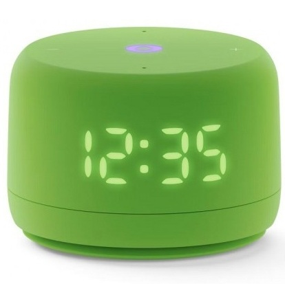
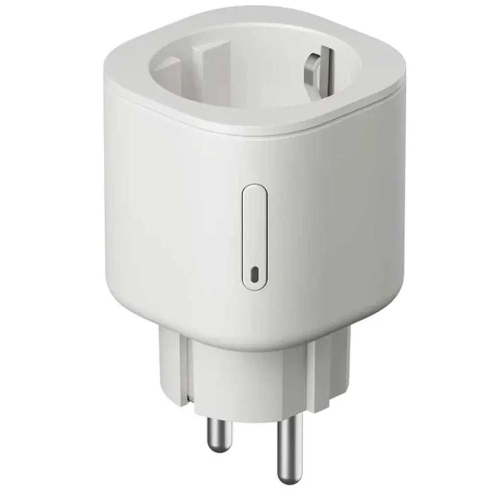

Яндекс
Датчики
Розетки, выключатели
Свет
Карниз
Сантехника
Увлажнители, очистители воздуха
Кондиционер, пылесос
Камера
Замок
Яндекс станция Макс
Яндекс станция Дуо Макс
Яндекс станция Миди
Яндекс станция Мини 3 Про
Яндекс станция Мини 3
Яндекс станция Лайт 2
Яндекс ТВ про 140см
Яндекс ТВ 165см
Пульт ДУ Яндекс YNDX-0006
Яндекс центр управления YNDX-00510

Умная колонка Яндекс.Станция Макс заключена в корпус из
пластика, обтянутого тканью. На лицевой стороне расположен
монохромный LED-дисплей, который отображает дату, погоду,
выводит анимацию голосового помощника. Световое кольцо на
верхней панели показывает состояние станции сменой цветов,
миганием, вращением, мерцанием, пульсацией. По бокам колонки
находятся 5 динамиков и 7 микрофонов. Трехполосная акустическая
система воспроизводит низкие, средние и высокие частоты из
разных динамиков. С Алисой можно разговаривать, задавать
вопросы, простить найти музыку, видео, информацию в интернете.
Помощник помогает решать прикладные задачи — устанавливать
будильник, включать/переключать треки в музыкальном плеере,
вызвать такси, заказать еду. Разъем Ethernet позволяет
подключать колонку к проводной локальной сети для доступа к
интернету со скоростью до 1 Гбит/с. Переключение с беспроводного
соединения Wi-Fi на проводное происходит автоматически. В
комплект входит пульт со встроенным микрофоном. Несколько
колонок и станций можно объединить в мультирум для передачи
музыки, звуков в любую точку дома. Поддерживает беспроводные
технологии Wi-Fi, Zigbee и Bluetooth.
Стоимость 280 000 тг

Станция Дуо Макс выполнена в бежевом корпусе из пластика и
ткани. Она оснащена контурной LED-подсветкой. Одна из
особенностей модели – поворотный сенсорный экран FullHD для
просмотра мультимедиа, ответов Алисы и управления устройствами
умного дома. Камера 13 Мп с углом обзора 120° позволяет общаться
по видеосвязи. Акустическая система с 4 широкополосными
динамиками и сабвуфером мощностью 60 Вт воспроизводит
сбалансированный звук. Яндекс.Станция Дуо Макс YNDX-00055BIE
поддерживает беспроводные технологии Wi-Fi, Zigbee и Bluetooth.
С помощью Алисы можно включать музыку, слушать сказки,
заказывать продукты, вызывать такси, ставить будильник.
Стоимость 350 000 тг

Яндекс Станция Миди — новая умная колонка с виртуальным
ассистентом Алисой. Мощное звучание 24 Вт в таком компактном
корпусе. LED-дисплей, который показывает время, погоду и реакции
Алисы, а также активная контурная LED-подсветка. Встроенный хаб
управления Zigbee и голосовое управление умным домом даже без
интернета. Беспроводная связь Wi-Fi (2,4–5 ГГц) и Bluetooth 5.0,
с возможностью встраивания в экосистему умного дома. Активная
контурная LED-подсветка и анимированные реакции на дисплее
добавляют эмоций, когда слушаете музыку и общаетесь с Алисой.
LED-дисплей показывает время и температуру. В режиме радионяни
Алиса может передавать вам звуки из детской на телефон или
вторую Яндекс Станцию.
Стоимость 126 000 тг

В отличие от предыдущих моделей, она оснащена встроенными
модулями Zigbee, Wi-Fi и Matter over Wi-Fi, что позволяет ей
управлять устройствами умного дома даже без подключения к
интернету, если те поддерживают такие же протоколы. Внутри
компактного корпуса скрывается 18-ваттный динамик и два
пассивных излучателя, усиливающих басы. Звучание стало заметно
богаче и глубже по сравнению с «Станцией Мини 3» — вы
почувствуете это сразу после первого запуска. «Станция Мини 3
Про» работает с голосовым помощником Алиса, который поможет
включить музыку, узнать погоду, управлять техникой, создать
напоминание или даже рассказать сказку. Её приятно поставить и
на полку, и на кухню — она выглядит современно и лаконично.
Стоимость 112 000 тг

Умная колонка Яндекс.Станция Мини 3 представлена в круглом сером
корпусе с отделкой из акустической ткани. Голосовой ассистент
Алиса с YandexGPT точно распознает команды, анализирует сложные
запросы, делит их на несколько простых и превращает в цепочку
действий. Колонка Яндекс.Станция Мини 3 синхронизируется с
другими умными устройствами в приложении Дом с Алисой и
управляет ими с помощью голосовых команд.
Стоимость 70 000 тг

Каждый может заглянуть в глазки Алисе. Она подмигнёт в ответ на
комплимент, зажмурится от восторга или опустит взгляд, когда
загрустит. А если произнести особые команды, то можно
активировать секретные реакции Алисы. Новый корпус Станции Лайт
2 и динамик мощностью 6 Вт позволили увеличить её акустический
объём, чтобы любимые треки звучали ещё чище и насыщеннее. Когда
захотите свериться с часами или узнать прогноз погоды, Алиса не
только озвучит ответ, но и покажет время и температуру на
LED-экране.
Стоимость 49 000 тг

Функция «Найди пульт». Может работать как Станция, даже с
выключенным экраном. Физическое отключение микрофона. 4
высокочувствительных микрофона + 1 в пульте. Можно объединять с
устройствами умного дома и управлять ими голосом. Подключение
через Wi-Fi.
Стоимость 560 000 тг

- Разрешение 4K UHD — наслаждайтесь четкостью и яркостью
изображения.
- Акустическая система Dolby Audio — погружение в объемный звук.
- Поддержка Smart TV — доступ к любимым приложениям и контенту.
- Угол обзора 178° — отличное качество изображения с любого ракурса.
- Множество входов — HDMI, USB, Ethernet и Bluetooth для подключения различных устройств.
- Акустическая система Dolby Audio — погружение в объемный звук.
- Поддержка Smart TV — доступ к любимым приложениям и контенту.
- Угол обзора 178° — отличное качество изображения с любого ракурса.
- Множество входов — HDMI, USB, Ethernet и Bluetooth для подключения различных устройств.
Стоимость 708 400 тг

Автоматизировать бытовую технику при помощи умного пульта Yandex
SmartControl YNDX-0006 проще, чем может показаться. С его
помощью можно управлять техникой, например телевизором или
кондиционером, а также любым другим устройством, которое
поддерживает ИК-соединение. Также осуществляется передача данных
посредством технологии Wi-Fi. Используя модель, можно не только
включать/выключать технику, но и настраивать её.
Стоимость 9 800 тг

Универсальный Хаб Яндекса для простого и быстрого подключения
разных приборов к умному дому с Алисой. И единая точка
управления всеми устройствами. С Хабом умный дом сможет больше.
Наполните его датчиками и множеством других Zigbee-устройств.
Хаб соединит их с Яндекс Станцией, и вы будете управлять умным
домом через приложение или голосом. Подключайте датчики Яндекса
с Zigbee к Хабу напрямую, объединяйте с другими устройствами
умного дома и задавайте сценарии. Множество процессов станут
автоматизированными. По Wi-Fi Хаб соединяется с лампочками,
чайниками, пылесосами и тысячами других девайсов разных
производителей. А ещё Хаб – это смарт-пульт, действующий на
360°. Даже если у вас дома простой телевизор или кондиционер,
соедините их с Хабом при помощи ИК-подключения и управляйте без
пульта.
Питание - сеть
Тип - центр управления
Количество подключаемых устройств - 20
Экосистема - Умный дом Яндекса
Протокол связи - Bluetooth, Wi-Fi, ZigBee
Питание - сеть
Тип - центр управления
Количество подключаемых устройств - 20
Экосистема - Умный дом Яндекса
Протокол связи - Bluetooth, Wi-Fi, ZigBee
Стоимость 28 000 тг
Датчик вибрации
Датчик открытия дверей
Датчик открытия дверей Яндекс
Датчик движения Яндекс
Датчик температуры и влажности Яндекс
Датчик температуры и влажности (монитор)
Датчик протечки воды Яндекс
Датчик протечки воды Sonoff
Детектор газа Aqara
Детектор газа SmartLife
Датчик дыма SmartLife
Датчик дыма Aqara
Датчик дыма Tuya

Беспроводной датчик проследит за сохранностью отдельных
предметов — окна, сейфа, ящика с ценным документами. В случае
инцидента, датчик отправит сообщение на смартфон или включит
звуковую сирену на Aqara Hub. Датчик умеет фиксировать три типа
событий: наклон, падение и вибрацию.
— Если окно откроют, сработает режим наклона.
— Если по окну ударят, он распознает вибрацию.
— Если разобьют стекло, датчик сообщит о падении.
Экосистема - Aqara
Протокол связи - ZigBee
Питание - CR2032
— Если окно откроют, сработает режим наклона.
— Если по окну ударят, он распознает вибрацию.
— Если разобьют стекло, датчик сообщит о падении.
Экосистема - Aqara
Протокол связи - ZigBee
Питание - CR2032
Стоимость 11 620 тг

Датчик открытия дверей и окон на базе протокола Zigbee надежно
реагирует на открытие дверей и окон, позволяя вам создавать
разнообразные сценарии умного дома в приложении Дом с Алисой.
Свяжите датчик с различными устройствами и настройте сценарии,
которые будут автоматически запускаться при срабатывании
датчика.
Экосистема - Умный дом Яндекса
Протокол связи - ZigBee
Питание - CR2032
Экосистема - Умный дом Яндекса
Протокол связи - ZigBee
Питание - CR2032
Стоимость 4 000 тг

Компактный беспроводный датчик реагирует на открытие дверей и
окон. Свяжите датчик с разными устройствами и создавайте
сценарии в приложении Дом с Алисой. Попробуйте задать сценарий,
по которому датчик напомнит проветрить комнату, если окна
закрыты больше 12 часов. И свяжите его с умным кондиционером,
чтобы кондиционер не работал впустую, пока вы проветриваете. А
ещё можно привязать датчик к умной лампочке — и свет в прихожей
будет включаться автоматически, когда вы приходите домой.
Экосистема - Умный дом Яндекса
Протокол связи - ZigBee
Питание - CR2032
Экосистема - Умный дом Яндекса
Протокол связи - ZigBee
Питание - CR2032
Стоимость 11 400 тг

Улавливает движение и запускает удобные сценарии освещения. Или
передаёт, что в помещении кто-то есть.Беспроводной компактный
датчик можно установить где угодно, в квартире или на даче: в
прихожей, ванной, комнатах и даже на лоджии. Свяжите датчик с
другими устройствами умного дома и создавайте множество удобных
сценариев в приложении Дом с Алисой. Например, освещение в
прихожей сможет включаться автоматически, когда вы вернётесь
домой. А чтобы свет не горел зря, можно настроить его выключение
при отсутствии движения. Также в приложении легко настроить
пуш-уведомления — с ними вы всегда будете в курсе, например,
если дома возникнет какое-то движение, пока вас нет. Для
подключения датчика к Умному дому с Алисой нужна Станция,
поддерживающая протокол Zigbee.
Экосистема - Умный дом Яндекса
Протокол связи - ZigBee
Питание - CR2450
Экосистема - Умный дом Яндекса
Протокол связи - ZigBee
Питание - CR2450
Стоимость 13 300 тг

Измеряет температуру и влажность в комнате и включает устройства
умного дома, когда нужно. Беспроводной компактный датчик легко
установить практически где угодно. Свяжите датчик с разными
устройствами и создавайте сценарии в приложении Дом с Алисой.
Например, можно объединить датчик с умным кондиционером и
увлажнителем. И настроить сценарий их автоматического запуска,
если в комнате станет слишком жарко и сухо. А можно задать
значение температуры, при котором дома будет включаться
обогреватель.
Экосистема - Умный дом Яндекса
Протокол связи - ZigBee
Питание - CR2032
Экосистема - Умный дом Яндекса
Протокол связи - ZigBee
Питание - CR2032
Стоимость 14 000 тг
.jpg)
Умное решение для контроля климата в вашем доме, обеспечивающее
точные измерения и удобное управление через мобильные
приложения. Легко разместить в любом помещении. Идеально
подходит для тех, кто хочет создать умный дом и следить за
климатом в помещениях, обеспечивая комфорт и здоровье для всей
семьи.
Экосистема - Умный дом Яндекса
Протокол связи - ZigBee
Питание - CR2032
Экосистема - Умный дом Яндекса
Протокол связи - ZigBee
Питание - CR2032
Стоимость 9 800 тг

Беспроводной компактный датчик легко установить на полу в кухне
или в ванной. Он сразу сообщит, если обнаружит там воду, и вы
сможете быстро отреагировать и избежать неприятных сюрпризов.
Просто настройте пуш-уведомления в приложении Дом с Алисой.
Свяжите датчик с умными розетками и создайте сценарий в
приложении, по которому в случае протечки приборы в доме
отключатся, а клапан, через который идёт вода, закроется.
Экосистема - Умный дом Яндекса
Протокол связи - ZigBee
Питание - CR2032
Экосистема - Умный дом Яндекса
Протокол связи - ZigBee
Питание - CR2032
Стоимость 14 000 тг

Умный датчик протечки воды защищает вашу квартиру от неприятных
сюрпризов. Он срабатывает, как только вода попадает на контакты
на его нижней панели. Проверять статус smartдатчика и управлять
им можно в приложении, и с помощью голосового помощника Алиса. К
умному дому датчик подключается по протоколу Zigbee.
Экосистема - Умный дом Яндекса
Протокол связи - ZigBee
Питание - CR2477
Экосистема - Умный дом Яндекса
Протокол связи - ZigBee
Питание - CR2477
Стоимость 8 400 тг

Умный датчик газа Aqara Smart Natural Gas Detector - зафиксирует
утечку газа, включит сигнализацию и отправит push-уведомление на
смартфон. Подключается к сети 220 В. В датчик встроена мощная
сирена на 85 дБ, которая включается при обнаружении утечки.
Также включается мигающий красный светодиод. При обнаружении
утечки включит сирену на всех хабах. На смартфон отправляется
push-уведомление.
Экосистема - Умный дом Яндекса, Aqara
Протокол связи - ZigBee
Питание - От сети
Экосистема - Умный дом Яндекса, Aqara
Протокол связи - ZigBee
Питание - От сети
Стоимость 29 330 тг

Основным предназначением данного датчика является обнаружения
утечки газа на ранней стадии и инициирования запуска сценариев
умного дома с целью предотвращения последствий от утечки.
Экосистема - Умный дом Яндекса, Smart Life
Протокол связи - ZigBee
Питание - От сети
Экосистема - Умный дом Яндекса, Smart Life
Протокол связи - ZigBee
Питание - От сети
Стоимость 17 500 тг

Быстро реагирует на дым. Благодаря высокой чувствительности
(0,089-0,25 дБ/м) датчик вовремя заметит очаг возгорания и
подаст звуковой сигнал. Настройте уведомления в мобильном
приложении «Дом с Алисой» и получайте push, когда датчик заметит
дым. Долго держит батарею. Датчик работает по беспроводному
протоколу Zigbee и расходует энергию только в момент
срабатывания и отправки уведомлений. Прост в установке. Датчик
крепится с помощью липкого слоя.
Экосистема - Умный дом Яндекса, Smart Life
Протокол связи - ZigBee
Питание - CR123A
Экосистема - Умный дом Яндекса, Smart Life
Протокол связи - ZigBee
Питание - CR123A
Стоимость 13 300 тг

Умный датчик дыма Aqara Smart Smoke Detector - Зафиксирует
задымление, включит сигнализацию и отправит push-уведомление на
смартфон. Работает на батарее CR17450. В датчик встроена мощная
сирена на 90 дБ, которая включается при обнаружении задымления.
Также включается мигающий красный светодиод. Автоматически все
датчики дыма связаны между собой. Например, у вас установлены
датчики в каждой комнате. Как только в одной комнате будет
зафиксировано возгорание, сигнализация включится автоматически
на всех датчиках. Тем самым, датчики «подстраховывают» друг
друга. У датчика дыма рекордная автономность — до 10 лет работы
на одном заряде батареи.
Экосистема - Умный дом Яндекса, Aqara
Протокол связи - ZigBee
Питание - CR17450
Экосистема - Умный дом Яндекса, Aqara
Протокол связи - ZigBee
Питание - CR17450
Стоимость 30 240 тг

Независимый умный датчик дыма. Принцип работы: обнаружение дыма,
звуковое оповещение, уведомления в приложении
Экосистема - Умный дом Яндекса, Tuya
Протокол связи - ZigBee
Питание - CR123А
Экосистема - Умный дом Яндекса, Tuya
Протокол связи - ZigBee
Питание - CR123А
Стоимость 17 780 тг
Выключатель сенсорный
Выключатель сенсорный 2х
Выключатель сенсорный 3х
Выключатель для роллштор сенсорный
Розетка встроенная
Розетка встроенная 2х
Розетка встроенная 3х
Диммер стеклянный
Умный диммер Яндекс
Реле для диммера ZigBee с Алисой, 2 линии
Розетка накладная Яндекс
Реле одноканальное Яндекс
Реле двуканальное Яндекс
Яндекс умная беспроводная кнопка YNDX-00524

Умный выключатель не требует модификации освещения и замены
проводки, не требуется дополнительный нулевой провод. Просто
замените традиционный выключатель и наслаждайтесь широким
функционалом - Дистанционное выключение света через приложение,
выключение в заданное время или по таймеру, а так же голосовое
управление через Яндекс Станцию.
Экосистема - Умный дом Яндекса
Протокол связи - ZigBee
Питание - От сети
(цвета: белый, золото, серый, черный)
Экосистема - Умный дом Яндекса
Протокол связи - ZigBee
Питание - От сети
(цвета: белый, золото, серый, черный)
Стоимость 15 200 тг

Умный выключатель не требует модификации освещения и замены
проводки, не требуется дополнительный нулевой провод. Просто
замените традиционный выключатель и наслаждайтесь широким
функционалом - Дистанционное выключение света через приложение,
выключение в заданное время или по таймеру, а так же голосовое
управление через Яндекс Станцию.
Экосистема - Умный дом Яндекса
Протокол связи - ZigBee
Питание - От сети
(цвета: белый, золото, серый, черный)
Экосистема - Умный дом Яндекса
Протокол связи - ZigBee
Питание - От сети
(цвета: белый, золото, серый, черный)
Стоимость 16 800 тг

Умный выключатель не требует модификации освещения и замены
проводки, не требуется дополнительный нулевой провод. Просто
замените традиционный выключатель и наслаждайтесь широким
функционалом - Дистанционное выключение света через приложение,
выключение в заданное время или по таймеру, а так же голосовое
управление через Яндекс Станцию.
Экосистема - Умный дом Яндекса
Протокол связи - ZigBee
Питание - От сети
(цвета: белый, золото, серый, черный)
Экосистема - Умный дом Яндекса
Протокол связи - ZigBee
Питание - От сети
(цвета: белый, золото, серый, черный)
Стоимость 18 240 тг

Умный Wi-Fi выключатель управления шторами предназначен для
управления электрокарнизами штор, рулонных штор, рольставен.
Используйте устройство в качестве привычного комнатного
выключателя с возможностью управления приводом штор из
мобильного приложения. Устройство устанавливается на место
«обычного» выключателя, является беспроводным устройством Wi-Fi.
Экосистема - Tuya
Протокол связи - WiFi
Питание - От сети
Экосистема - Tuya
Протокол связи - WiFi
Питание - От сети
Стоимость 16 480 тг


С её помощью можно: дистанционно отключить утюг или плойку,
включить обогреватель или кондиционер по пути домой, настроить
включение и выключение света по расписанию для растений или
аквариума, включить гирлянду голосом и многое другое. Благодаря
функции энергомониторинга, вы можете отслеживать в мобильном
приложении, сколько энергии потребляют ваши электроприборы и
какие из них работают в данный момент.
Экосистема - Умный дом Яндекса
Протокол связи - ZigBee
Питание - От сети
(цвета: белый, золото, серый, черный)
Экосистема - Умный дом Яндекса
Протокол связи - ZigBee
Питание - От сети
(цвета: белый, золото, серый, черный)
Стоимость 14 400 тг

С её помощью можно: дистанционно отключить утюг или плойку,
включить обогреватель или кондиционер по пути домой, настроить
включение и выключение света по расписанию для растений или
аквариума, включить гирлянду голосом и многое другое. Благодаря
функции энергомониторинга, вы можете отслеживать в мобильном
приложении, сколько энергии потребляют ваши электроприборы и
какие из них работают в данный момент.
Экосистема - Умный дом Яндекса
Протокол связи - ZigBee
Питание - От сети
(цвета: белый, золото, серый, черный)
Экосистема - Умный дом Яндекса
Протокол связи - ZigBee
Питание - От сети
(цвета: белый, золото, серый, черный)
Стоимость 20 800 тг

С её помощью можно: дистанционно отключить утюг или плойку,
включить обогреватель или кондиционер по пути домой, настроить
включение и выключение света по расписанию для растений или
аквариума, включить гирлянду голосом и многое другое. Благодаря
функции энергомониторинга, вы можете отслеживать в мобильном
приложении, сколько энергии потребляют ваши электроприборы и
какие из них работают в данный момент.
Экосистема - Умный дом Яндекса
Протокол связи - ZigBee
Питание - От сети
(цвета: белый, золото, серый, черный)
Экосистема - Умный дом Яндекса
Протокол связи - ZigBee
Питание - От сети
(цвета: белый, золото, серый, черный)
Стоимость 28 160 тг

Умный диммер — это идеальное решение для управления
интенсивностью освещения в вашем умном доме. С помощью этого
устройства вы можете легко регулировать уровень яркости
подключенных световых приборов как с мобильного приложения, так
и вручную, используя сенсор на лице устройства.
Экосистема - Умный дом Яндекса
Протокол связи - ZigBee
Питание - От сети
Экосистема - Умный дом Яндекса
Протокол связи - ZigBee
Питание - От сети
Стоимость 20 000 тг

Умный диммер Яндекса поможет настроить освещение дома именно
так, как вам нужно. С ним легко регулировать уровень яркости
люстр и светильников с диммируемыми лампочками: от бодрящего
яркого до расслабляющего приглушенного. Диммер работает только с
лампочками, оснащёнными встроенной системой регулировки яркости.
Устанавливается в стандартный круглый подрозетник и подключается
только с нейтралью.
Экосистема - Умный дом Яндекса
Протокол связи - ZigBee
Питание - От сети
Экосистема - Умный дом Яндекса
Протокол связи - ZigBee
Питание - От сети
Стоимость 23 200 тг

Умное диммер реле Zigbee - это инновационное устройство для
систем Умный Дом, которое позволяет управлять различным
освещением с помощью приложения на телефоне или голосовыми
командами. Умное диммер реле имеет компактный мини-корпус,
который легко устанавливается в большинство монтажных коробок
для выключателей и розеток
Экосистема - Умный дом Яндекса
Протокол связи - ZigBee
Питание - От сети
Экосистема - Умный дом Яндекса
Протокол связи - ZigBee
Питание - От сети
Стоимость 20 000 тг

Работает на универсальном протоколе связи Matter™ — легко
подключается к умному дому, а настроенные сценарии с розеткой
могут работать, даже если отключится интернет . Лаконичная и
компактная, подходит к большинству розеток и удлинителей.
Создавайте удобные сценарии и расписания. Проверяйте статус
умной розетки удалённо через приложение и, если нужно,
отключайте её⁴. Получайте сообщения, когда состояние розетки
меняется, — и вы будете в курсе, если что-то пойдёт не так.
Экосистема - Умный дом Яндекса
Протокол связи - Matter
Питание - От сети
Экосистема - Умный дом Яндекса
Протокол связи - Matter
Питание - От сети
Стоимость 11 200 тг

Умное реле Яндекс — это компактное устройство, позволяющее
сделать обычные выключатели частью умного дома. Оно
устанавливается в подрозетник за существующим выключателем и
подключается к системе умного дома через протокол Zigbee 3.0.
Экосистема - Умный дом Яндекса
Протокол связи - ZigBee
Питание - От сети
Экосистема - Умный дом Яндекса
Протокол связи - ZigBee
Питание - От сети
Стоимость 12 600 тг

Умное реле Яндекс — это компактное устройство, позволяющее
сделать обычные выключатели частью умного дома. Оно
устанавливается в подрозетник за существующим выключателем и
подключается к системе умного дома через протокол Zigbee 3.0.
Экосистема - Умный дом Яндекса
Протокол связи - ZigBee
Питание - От сети
Экосистема - Умный дом Яндекса
Протокол связи - ZigBee
Питание - От сети
Стоимость 14 000 тг

Работает от батареек и может стать удобным дверным звонком или
единственной кнопкой для запуска и выключения разных устройств.
Компактную кнопку легко установить где угодно, будь то дверной
косяк или прикроватный столик. Свяжите кнопку с разными
устройствами и создавайте сценарии в приложении Дом с Алисой.
Попробуйте установить кнопку как дверной звонок — и она будет
передавать сигнал на Яндекс Станцию и сообщение в приложение Дом
с Алисой, когда к вам придут. Или поставьте беззвучный режим,
если не хотите, чтобы вас беспокоили непрошенные гости.
Экосистема - Умный дом Яндекса
Протокол связи - ZigBee
Питание - CR2032
Экосистема - Умный дом Яндекса
Протокол связи - ZigBee
Питание - CR2032
Стоимость 13 300 тг
Светодиодная лента Яндекс 3м
Удлинитель для светодиодная лента Яндекс
Светодиодная лента 5м
Gauss 4.5W Е14, светодиодная, теплый белый
Gauss 5W Е14, светодиодная, нейтральный белый
Feron 7W Е14, светодиодная, нейтральный белый
Gauss 5W Е14, светодиодная, RGB
Gauss 6W Е14, светодиодная, RGB
Gauss 7W Е14, светодиодная, нейтральный белый
Gauss 9W Е14, филаментная, теплый белый
EGLO 4W E27, светодиодная, филаментная, желтый
Gauss 5W E27, светодиодная, теплый белый
Gauss 6.5W E27, филаментная, желтый
Gauss 7W E27, светодиодная, теплый белый
Gauss 8.5W E27, светодиодная, RGB
TP-LINK 8.7W E27, светодиодная, теплый белый
Gauss 9W E27, светодиодная, естественный белый
EGLO 9W E27, светодиодная, RGB
Gauss 10W E27, светодиодная, RGB
Gauss 11W E27, светодиодная, холодный белый
Gauss 5W GU5.3, светодиодная, нейтральный белый
Gauss 5W GU10, светодиодная, холодный белый
Gauss 8W GX53, светодиодная, холодный белый

Светодиодная лента Яндекс YNDX-00544 с контроллером и адаптером
питания исправно работает при управлении с помощью выключателя,
голосовых команд и приложения «Дом с Алисой». Модель
поддерживает настройку через протоколы связи Bluetooth, Wi-Fi и
Matter. Последний вариант удобен при наличии в доме умных
устройств от разных производителей.В одном метре ленты
установлено 24 светодиода с интенсивностью свечения 250 лм.
Поэтому Яндекс YNDX-00544 подходит для создания длинных сборок
на потолке и стенах. Короткие отрезки дают недостаточно света,
но успешно выполняют функцию декора. 3-метровая лента с защитой
от брызг и пыли IP65 подходит для уличного и монтажа в ванной
комнате.
Экосистема - Умный дом Яндекса
Протокол связи - Matter
Питание - От сети
Экосистема - Умный дом Яндекса
Протокол связи - Matter
Питание - От сети
Стоимость 28 000 тг

Удлинитель светодиодной ленты Яндекс YNDX-00547 подходит для
увеличения сборок с 24 диодами на 1 метр. Плотная оплетка
полностью защищает контакты от пыли и влаги, допускает установку
на улице или в ванной комнате. Яркости светового потока 250 лм
хватает для создания фонового или декоративного освещения,
зонирования помещения.Яндекс YNDX-00547 поддерживает нейтральный
белый свет и настройку оттенков и эффектов RGB. Есть поддержка
управления с простого выключателя, контроллера, приложения на
смартфоне и голосовых команд.
Экосистема - Умный дом Яндекса
Протокол связи - Matter
Питание - От сети
Экосистема - Умный дом Яндекса
Протокол связи - Matter
Питание - От сети
Стоимость 6 300 тг

Умная светодиодная Wi-Fi RGB лента KOJIMA с регулируемым
световым потоком от 70 до 800 люмен, низким энергопотреблением.
Мобильное приложение адаптировано под большинство устройств IOS
и ANDROID. Вы с легкостью сможете управлять яркостью и цветом,
устанавливать динамические сцены, включать и выключать свет по
расписанию с функцией таймер, управлять группой лент одним
нажатием, управлять с помощью голосового ассистента Яндекс
Алисы.
Экосистема - KOJIMA HOME
Протокол связи - WiFi
Питание - От сети
Экосистема - KOJIMA HOME
Протокол связи - WiFi
Питание - От сети
Стоимость 18 200 тг

Диммируемая лампочка
Экосистема - WIZ
Протокол связи - WiFi
Питание - От сети
Экосистема - WIZ
Протокол связи - WiFi
Питание - От сети
Стоимость 11 760 тг

Диммируемая лампочка
Стоимость 1 330 тг

Диммируемая лампочка
Стоимость 23 100 тг

Диммируемая лампочка
Экосистема - WIZ
Протокол связи - WiFi
Питание - От сети
Экосистема - WIZ
Протокол связи - WiFi
Питание - От сети
Стоимость 11 200 тг

Диммируемая лампочка
Стоимость 1 820 тг

Диммируемая лампочка
Стоимость 2 100 тг

Диммируемая лампочка
Стоимость 2 520 тг

Диммируемая лампочка
Стоимость 5 740 тг

Диммируемая лампочка
Стоимость 1 260 тг

Диммируемая лампочка
Экосистема - WIZ
Протокол связи - WiFi
Питание - От сети
Экосистема - WIZ
Протокол связи - WiFi
Питание - От сети
Стоимость 4 200 тг

Диммируемая лампочка
Экосистема - WIZ
Протокол связи - WiFi
Питание - От сети
Экосистема - WIZ
Протокол связи - WiFi
Питание - От сети
Стоимость 14 700 тг

Диммируемая лампочка
Экосистема - WIZ
Протокол связи - WiFi
Питание - От сети
Экосистема - WIZ
Протокол связи - WiFi
Питание - От сети
Стоимость 4 060 тг

Диммируемая лампочка
Стоимость 5 880 тг

Диммируемая лампочка
Стоимость 2 520 тг

Диммируемая лампочка
Стоимость 4 900 тг

Диммируемая лампочка
Экосистема - WIZ
Протокол связи - WiFi
Питание - От сети
Экосистема - WIZ
Протокол связи - WiFi
Питание - От сети
Стоимость 6 580 тг

Диммируемая лампочка
Стоимость 1 680 тг

Диммируемая лампочка
Стоимость 6 720 тг

Диммируемая лампочка
Стоимость 1 680 тг

Диммируемая лампочка
Стоимость 2 800 тг
Сенсорные выключатели
Сенсорные выключатели
Сенсорные выключатели
Сенсорные выключатели
Сенсорные выключатели
Сенсорные выключатели